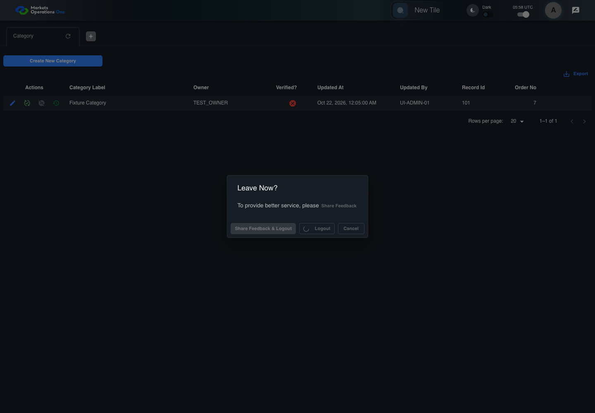
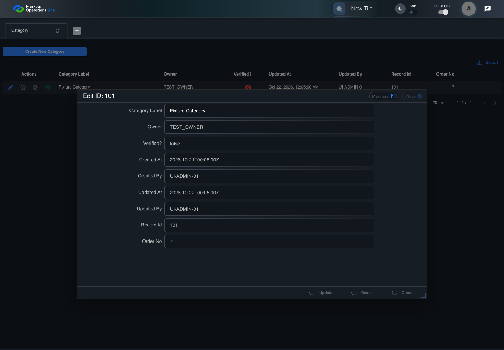

AUTH-115 shared-session rejection across two live pages
PASS · application/run-050/auth-115-shared-session-rejection-across-two-live-pages-af2f28b389a1-attempt-1 · ACTUAL_APPLICATION_LOCAL_SERVICES
Actual React shell, Category grid, and response handler. Controlled browser identity and service responses. Cross-tab rejection does not establish BFF global revocation. Spreadsheet formula execution requires a separate viewer.
2026-10-22T05:58:43.466Z to 2026-10-22T05:58:50.352Z
Assertions and result · Artifact manifest · Exact run inputs and source hashes
Result SHA-256:4f81db6dd1d441258e768a8a75d65d37499c53d9f819e4e2a4bd9a38d3f2bba3Machine observations
- rejected-category-response.json
a874a28e4a8aa5291618127c0134685b394c071e0d3f87ab488f10066e839ecc - shared-session-fixture.json
0a66cb6a68e2eb3a1120110b3ed8bdf6a332306ed1fea90a678bb3a5d8960b4e
Screenshot capture: CAPTURED. Named frames: 24.
Step screenshot evidence: COMPLETE. 13/13 canonical steps have execution screenshots.
Canonical step timeline
Given browser tabs TAB-A and TAB-B share origin and user-a SESSION-A with FMO PORTAL ADMIN owner role TEST_OWNER
Execution: PASSED.
1. tab-b-initial TAB-B authenticated under the shared SESSION-A fixture.
2026-10-22T05:58:44.925Z · 1440×1000
Step: AUTH-115 step 1
SHA-256:21fef8241aa6f773bcf0171251c7fc932d4db276f62151bfcd6973cc7673d181
2. step-01 Visible state after step 1: Given browser tabs TAB-A and TAB-B share origin and user-a SESSION-A with FMO PORTAL ADMIN owner role TEST_OWNER
2026-10-22T05:58:45.056Z · 1440×1000
Step: /Users/lushevol/code/github/ratan-release-impact/workbench/tasks/ui-test-coverage-20261022/test-cases.md:4340
SHA-256:21fef8241aa6f773bcf0171251c7fc932d4db276f62151bfcd6973cc7673d181And the dialog named "Leave Now?" on the Home page is visible in TAB-A
Execution: PASSED.3. step-02 Visible state after step 2: And the dialog named "Leave Now?" on the Home page is visible in TAB-A
2026-10-22T05:58:45.788Z · 1440×1000
Step: /Users/lushevol/code/github/ratan-release-impact/workbench/tasks/ui-test-coverage-20261022/test-cases.md:4341
SHA-256:7226c412007c78f8b815b8fd5f1caaf1f2af1c660868408e19c484d18b4c68beAnd the Category editor is visible for record 101 in the dialog titled "edit ID: 101" on the administration page in TAB-B
Execution: PASSED.4. tab-b-step-3 TAB-B state for canonical step 3: the Category editor is visible for record 101 in the dialog titled "edit ID: 101" on the administration page in TAB-B
2026-10-22T05:58:45.949Z · 1440×1000
Step: AUTH-115
SHA-256:7676a8bfed414dcda54da79a877b1912ef3c74f891fba90f3914e29311dff6a55. step-03 Visible state after step 3: And the Category editor is visible for record 101 in the dialog titled "edit ID: 101" on the administration page in TAB-B
2026-10-22T05:58:45.987Z · 1440×1000
Step: /Users/lushevol/code/github/ratan-release-impact/workbench/tasks/ui-test-coverage-20261022/test-cases.md:4342
SHA-256:c0220f635b78dd92745c8315e1e11e7ea3a567e24582f704c1f8642a6111e7b5When User A in browser tab "TAB-A" clicks the button labelled "Logout" inside the dialog named "Leave Now?" on the Home page
Execution: PASSED.
6. step-04 Visible state after step 4: When User A in browser tab "TAB-A" clicks the button labelled "Logout" inside the dialog named "Leave Now?" on the Home page
2026-10-22T05:58:46.208Z · 1440×1000
Step: /Users/lushevol/code/github/ratan-release-impact/workbench/tasks/ui-test-coverage-20261022/test-cases.md:4343
SHA-256:b1ad224b84558aefe4929fddf7e04c81c8270ac4a5fd3ede247975caaf76f446And the controlled browser clock advances through the 1000-millisecond logout delay
Execution: PASSED.
7. step-05 Visible state after step 5: And the controlled browser clock advances through the 1000-millisecond logout delay
2026-10-22T05:58:46.578Z · 1440×1000
Step: /Users/lushevol/code/github/ratan-release-impact/workbench/tasks/ui-test-coverage-20261022/test-cases.md:4344
SHA-256:664babd84ff6d7926ad8e99d7a4bbde727c1a202e01dd31a587c9d3836eefb38And User A in browser tab "TAB-B" clicks the button labelled "Update" inside the dialog titled "edit ID: 101" on the administration page
Execution: PASSED.
8. tab-b-step-6 TAB-B state for canonical step 6: User A in browser tab "TAB-B" clicks the button labelled "Update" inside the dialog titled "edit ID: 101" on the administration page
2026-10-22T05:58:46.695Z · 1440×1000
Step: AUTH-115
SHA-256:1c6c66457e1897f5a1cd03ee153dc66d8aa7aa43006829bdf3644538d64e3819
9. step-06 Visible state after step 6: And User A in browser tab "TAB-B" clicks the button labelled "Update" inside the dialog titled "edit ID: 101" on the administration page
2026-10-22T05:58:46.838Z · 1440×1000
Step: /Users/lushevol/code/github/ratan-release-impact/workbench/tasks/ui-test-coverage-20261022/test-cases.md:4345
SHA-256:664babd84ff6d7926ad8e99d7a4bbde727c1a202e01dd31a587c9d3836eefb38And the Category update response in TAB-B rejects SESSION-A with TOKEN_INVALID_EXPIRED
Execution: PASSED.
10. tab-b-step-7 TAB-B state for canonical step 7: the Category update response in TAB-B rejects SESSION-A with TOKEN_INVALID_EXPIRED
2026-10-22T05:58:47.005Z · 1440×1000
Step: AUTH-115
SHA-256:ae3c4624b2acee12e420561da6476427d13150250baf1cf350817b36cf48092a
11. step-07 Visible state after step 7: And the Category update response in TAB-B rejects SESSION-A with TOKEN_INVALID_EXPIRED
2026-10-22T05:58:47.144Z · 1440×1000
Step: /Users/lushevol/code/github/ratan-release-impact/workbench/tasks/ui-test-coverage-20261022/test-cases.md:4346
SHA-256:664babd84ff6d7926ad8e99d7a4bbde727c1a202e01dd31a587c9d3836eefb38Then the textbox with placeholder "Enter Username" on the login page is visible in browser tab "TAB-B"
Execution: PASSED.
12. tab-b-step-8 TAB-B state for canonical step 8: the textbox with placeholder "Enter Username" on the login page is visible in browser tab "TAB-B"
2026-10-22T05:58:47.348Z · 1440×1000
Step: AUTH-115
SHA-256:a40948c7c5f683be16603a131e669fdfefc46300ada4b40c0ac9ff4e0afa76c4
13. step-08 Visible state after step 8: Then the textbox with placeholder "Enter Username" on the login page is visible in browser tab "TAB-B"
2026-10-22T05:58:47.501Z · 1440×1000
Step: /Users/lushevol/code/github/ratan-release-impact/workbench/tasks/ui-test-coverage-20261022/test-cases.md:4347
SHA-256:664babd84ff6d7926ad8e99d7a4bbde727c1a202e01dd31a587c9d3836eefb38And the text input with placeholder "Enter Password" on the login page is visible in browser tab "TAB-B"
Execution: PASSED.
14. tab-b-step-9 TAB-B state for canonical step 9: the text input with placeholder "Enter Password" on the login page is visible in browser tab "TAB-B"
2026-10-22T05:58:47.673Z · 1440×1000
Step: AUTH-115
SHA-256:a40948c7c5f683be16603a131e669fdfefc46300ada4b40c0ac9ff4e0afa76c4
15. step-09 Visible state after step 9: And the text input with placeholder "Enter Password" on the login page is visible in browser tab "TAB-B"
2026-10-22T05:58:47.819Z · 1440×1000
Step: /Users/lushevol/code/github/ratan-release-impact/workbench/tasks/ui-test-coverage-20261022/test-cases.md:4348
SHA-256:664babd84ff6d7926ad8e99d7a4bbde727c1a202e01dd31a587c9d3836eefb38And the button labelled "Sign In" on the login page is visible in browser tab "TAB-B"
Execution: PASSED.
16. tab-b-step-10 TAB-B state for canonical step 10: the button labelled "Sign In" on the login page is visible in browser tab "TAB-B"
2026-10-22T05:58:47.980Z · 1440×1000
Step: AUTH-115
SHA-256:a40948c7c5f683be16603a131e669fdfefc46300ada4b40c0ac9ff4e0afa76c4
17. step-10 Visible state after step 10: And the button labelled "Sign In" on the login page is visible in browser tab "TAB-B"
2026-10-22T05:58:48.140Z · 1440×1000
Step: /Users/lushevol/code/github/ratan-release-impact/workbench/tasks/ui-test-coverage-20261022/test-cases.md:4349
SHA-256:664babd84ff6d7926ad8e99d7a4bbde727c1a202e01dd31a587c9d3836eefb38And the tablist named "workspaces" on the Home page is absent in browser tab "TAB-B"
Execution: PASSED.
18. tab-b-step-11 TAB-B state for canonical step 11: the tablist named "workspaces" on the Home page is absent in browser tab "TAB-B"
2026-10-22T05:58:48.288Z · 1440×1000
Step: AUTH-115
SHA-256:a40948c7c5f683be16603a131e669fdfefc46300ada4b40c0ac9ff4e0afa76c4
19. step-11 Visible state after step 11: And the tablist named "workspaces" on the Home page is absent in browser tab "TAB-B"
2026-10-22T05:58:48.428Z · 1440×1000
Step: /Users/lushevol/code/github/ratan-release-impact/workbench/tasks/ui-test-coverage-20261022/test-cases.md:4350
SHA-256:664babd84ff6d7926ad8e99d7a4bbde727c1a202e01dd31a587c9d3836eefb38And the alert in the portal notification area displays exactly "Expired Session, please login again."
Execution: PASSED.
20. tab-b-step-12 TAB-B state for canonical step 12: the alert in the portal notification area displays exactly "Expired Session, please login again."
2026-10-22T05:58:48.590Z · 1440×1000
Step: AUTH-115
SHA-256:a40948c7c5f683be16603a131e669fdfefc46300ada4b40c0ac9ff4e0afa76c4
21. step-12 Visible state after step 12: And the alert in the portal notification area displays exactly "Expired Session, please login again."
2026-10-22T05:58:48.751Z · 1440×1000
Step: /Users/lushevol/code/github/ratan-release-impact/workbench/tasks/ui-test-coverage-20261022/test-cases.md:4351
SHA-256:664babd84ff6d7926ad8e99d7a4bbde727c1a202e01dd31a587c9d3836eefb38And the rejected Category update response contains no category record
Execution: PASSED.
22. tab-b-step-13 TAB-B state for canonical step 13: the rejected Category update response contains no category record
2026-10-22T05:58:48.895Z · 1440×1000
Step: AUTH-115
SHA-256:a40948c7c5f683be16603a131e669fdfefc46300ada4b40c0ac9ff4e0afa76c4
23. step-13 Visible state after step 13: And the rejected Category update response contains no category record
2026-10-22T05:58:49.053Z · 1440×1000
Step: /Users/lushevol/code/github/ratan-release-impact/workbench/tasks/ui-test-coverage-20261022/test-cases.md:4352
SHA-256:664babd84ff6d7926ad8e99d7a4bbde727c1a202e01dd31a587c9d3836eefb38
Additional named frames

The final visible state after the named test assertions.
2026-10-22T05:58:49.477Z · 1440×1000Step: Test source: /Users/lushevol/code/github/ratan-release-impact/workbench/e2e/audit-specs/additional-boundaries.spec.ts:60
SHA-256:
664babd84ff6d7926ad8e99d7a4bbde727c1a202e01dd31a587c9d3836eefb38Screenshots establish visible state only. Assertions and traces support functional claims.